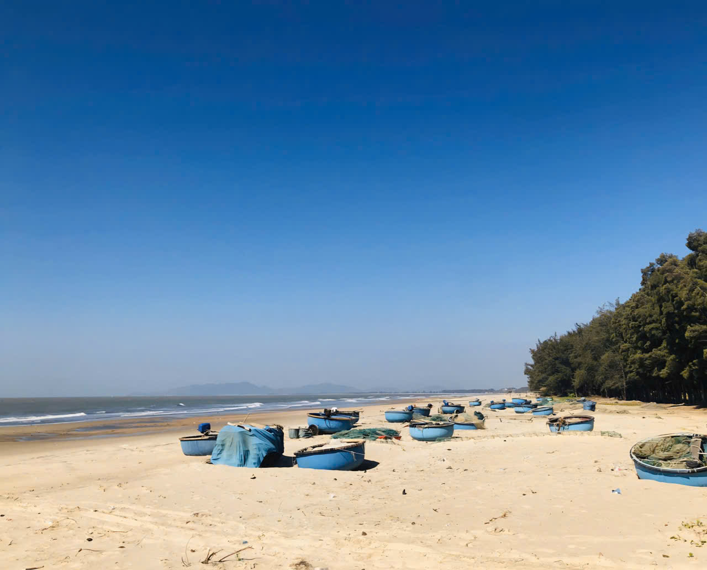
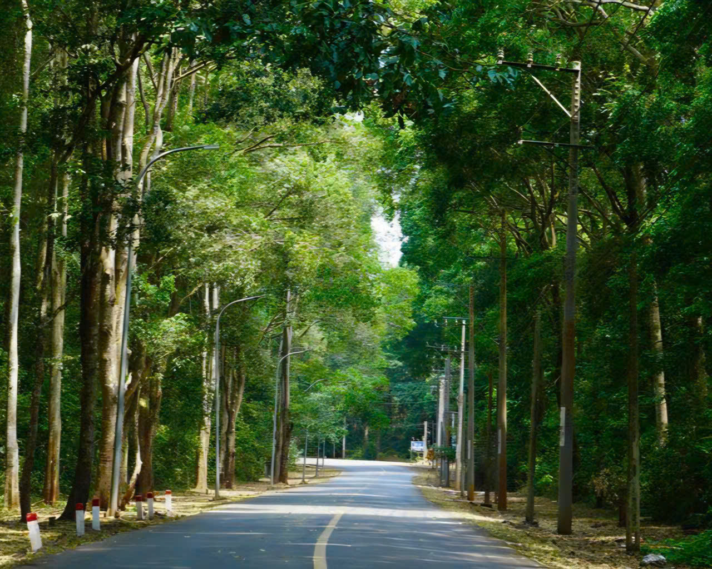
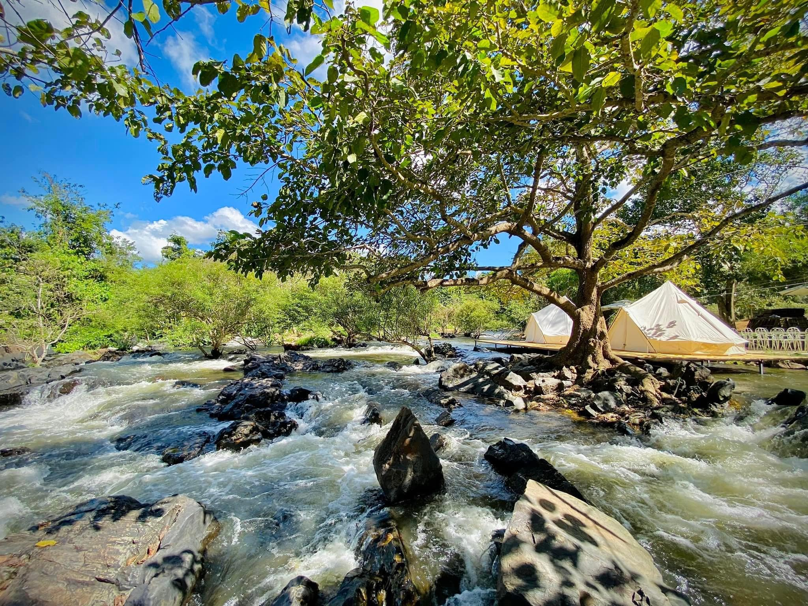

Nơi đất trời hòa quyện, phát triển không ngừng.
Ấm áp từ cảnh, thân thương từ người.
Một miền xanh cho những ngày muốn chậm.
Bãi biển Hồ Tràm-Vẻ đẹp nguyên bản của biển- Biển Hồ Tràm là một khu vực bờ biển hoang sơ, tuyệt đẹp thuộc huyện Xuyên Mộc, tỉnh Bà Rịa – Vũng Tàu, nổi tiếng với cát trắng mịn, nước biển xanh trong màu ngọc bích, không khí trong lành và yên bình Chi tiết |
 |
|  |
Rừng nguyên sinh Bình ChâuRừng nguyên sinh Bình Châu – Phước Bửu là một trong những khu rừng ven biển hiếm hoi còn tương đối nguyên vẹn ở Việt Nam, nằm trên địa bàn huyện Xuyên Mộc, tỉnh Bà Rịa – Vũng Tàu. Chi tiết |
Thác Hòa BìnhThác Hòa Bình Xuyên Mộc là một điểm du lịch thiên nhiên hoang sơ nổi bật ở huyện Xuyên Mộc, tỉnh Bà Rịa – Vũng Tàu (Việt Nam). Đây là nơi kết hợp giữa dòng thác mát lạnh, không khí trong lành và cảnh quan rừng xanh, rất phù hợp cho các chuyến đi dã ngoại, cắm trại cuối tuần cùng gia đình và bạn bè. Chi tiết |
 |